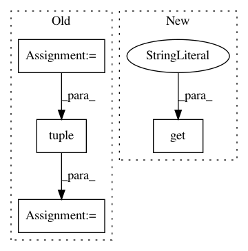

b31cab02dcf9f2c75974ade863b0b036387a6e56,batchflow/models/torch/encoder_decoder.py,EncoderBlock,__init__,#EncoderBlock#Any#Any#Any#Any#Any#,190
Before Change
class EncoderBlock(nn.Module):
def __init__(self, inputs, i, steps, downsample, block_args, **kwargs):
super().__init__()
ifilters = list(get_shape(inputs))[1]
self.downsample = ConvBlock(inputs, filters=ifilters, **{**kwargs, **downsample})
shape = list(get_shape(self.downsample))
shape = tuple(shape)
base_block = block_args.get("base")
args = {**kwargs, **block_args, **unpack_args(block_args, i, steps)}
self.encoder = base_block(shape, **args)
After Change
self.encoder = base_block(inputs, **args)
e_shape = get_shape(self.encoder)
ifilters = downsample.get("filters") or e_shape[1]
self.downsample = ConvBlock(e_shape, filters=ifilters, **{**kwargs, **downsample})
self.output_shape = self.downsample.output_shape
In pattern: SUPERPATTERN
Frequency: 4
Non-data size: 4
Instances
Project Name: analysiscenter/batchflow
Commit Name: b31cab02dcf9f2c75974ade863b0b036387a6e56
Time: 2019-08-06
Author: Tsimfer.SA@gazprom-neft.ru
File Name: batchflow/models/torch/encoder_decoder.py
Class Name: EncoderBlock
Method Name: __init__
Project Name: developmentseed/label-maker
Commit Name: fb28a0ead4d54681320eb38a49d7f692a532cba0
Time: 2020-08-18
Author: marthamorrissey93@gmail.com
File Name: label_maker/utils.py
Class Name:
Method Name: get_tile_tif
Project Name: riga/tfdeploy
Commit Name: df38756fb9220bd605acc3e8d5fd42f7f43c3a1e
Time: 2016-03-10
Author: marcelrieger@me.com
File Name: tests/test_ops.py
Class Name: OpsTestCase
Method Name: random
Project Name: rail-berkeley/softlearning
Commit Name: 4cdc96ec820e5401987347a18bb943e1836ce447
Time: 2018-11-20
Author: hartikainen@berkeley.edu
File Name: examples/mujoco_all_ray.py
Class Name:
Method Name: run_experiment